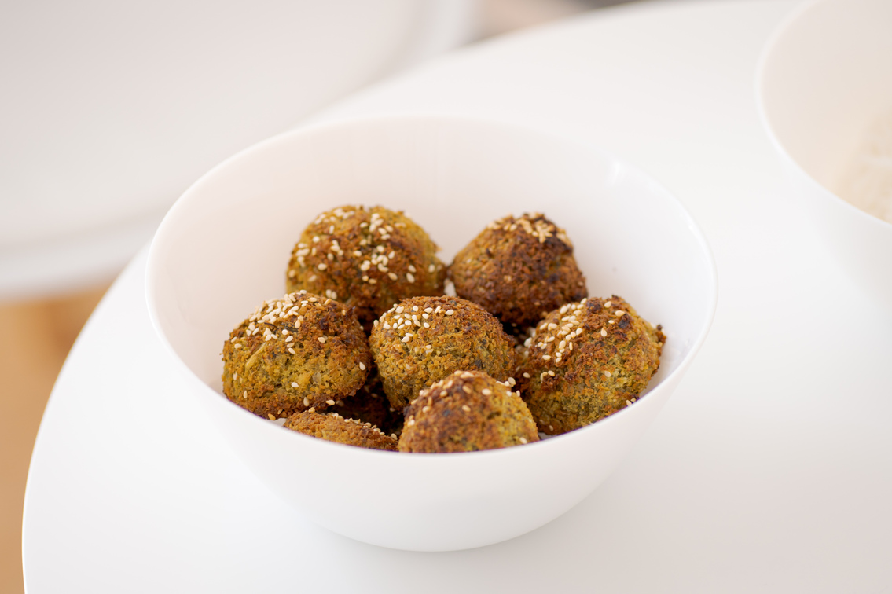

Falafel

Ingredients:
Chickpeas
Onions
Parsley
Coriander seeds
Cumin
Salt
Steps:
Mix all ingredients
Pulse mixture in food processor
Chill in fridge for 1h
Form balls
Deep fry/bake the falafel balls